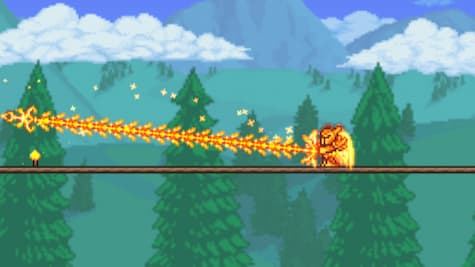
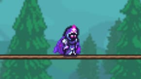
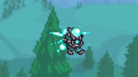
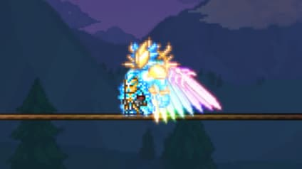

Terraria is a game with a lot of different ways to play depending on the class and playstyle you choose. This site goes over the main builds in Terraria, including melee, mage, ranger, and summoner.
If you're new or just want to try something different, this site can help you find a build that fits how you like to play.
Classes

Melee
Melee focuses on close combat and high defense. It is great for players who like to take hits and stay in the middle of fights.

Mage
Mage uses powerful magic attacks that deal high damage. It is strong but requires careful positioning because of lower defense.

Ranger
Ranger uses bows and guns to attack from a distance. It allows players to stay safe while still dealing consistent damage.

Summoner
Summoner relies on minions to fight for them. It is a unique playstyle that focuses on controlling enemies rather than direct attacks.